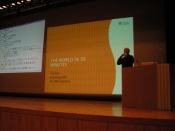

The World In 30 Minutes （Tim Bray）
- スピーカー
- Tim Bray - Sun Microsystems, Inc; The Internet Engineering Task Force "Atompub"
- プロフィール
- Tim Bray, a Canadian, has been in the software profession for over twenty years. He's worked on the Oxford English Dictionary, Web Search Engines, XML, Atom, and Blogging technology. He currently servers as Director of Web Technologies at Sun Microsystems and publishes a blog at http://www.tbray.org/ongoing/
- 講演時間
- 16：30〜17：00
- 講演資料
- http://www.tbray.org/talks/rubykaigi2007.pdf
the_world_in_30minutes.pdf （オリジナル, 3.90 MB）
http://www.tbray.org/talks/rubykaigi2007.pdf …公演中は404でしたが(It's coming)、 講演後にはもうダウンロードできるようになってました。
自己紹介
- 白い髭があります
- 1979年から職業プログラマ
- 1987年からテキスト処理
- 2006年からRubyを使いはじめました
- Rubyが最も好きなプログラム言語
Rubyはプログラマとプログラムをより良くする。
M17Nのはなしをします。 1年まえからのblogでのポスト数の変化をTechnoratiより、見ると、 1時間あたりのポスト数は時間で変化しない。どの言語が優位というわけでもない。 つまり、Rubyは地球上のどのローカル時間でも使われている。
というわけで、たぶんバグ：
/[a-zA-Z]+/
解決するべき問題
- キャラクタコードの同定
- データの保存
- 使いやすいAPI
詳しくは、「The World's Writing Systems」(1996)を参照のこと。 これは、美しくて高い本。
インターネット上のテキスト処理については、 「Character Model for the World Wide Web 1.0: Fundamentals」 W3C recommendation 2005, http://www.w3.org/TR/charmod/ を参照のこと。 この文書では、Unicodeに重点が起かれている。
Unicode
UnicodeとISO10646。このふたつは今も将来も同一のもの。 詳細は、「Unicode 5.0」を参照のこと。 この本も高いが、よく整理されている。
Unicodeについて語ると何日もかかるがここではその一部を紹介する。
- Unicodeは17枚の言語面それぞれに64kのコードポイント(U+0000-U+10FFFF)が定義されている
- Basic Multilingal Plane (BMP)
- Dead languages & Math
- Han Characters
- :
- 文字は数字でidentifyされている。
- U+0000からU+FFFFを見ると、
- アルファベット
- 句読点
- アジア言語
- Han characters
- 韓国語
- インド語
- タイ語
- …
- U+0000からU+FFFFを見ると、
詳細は、http://www.unicode.org/Public/UNIDATA/ に。
Unicodeの良い点悪い点
Unicodeは完璧ではないが良い点がいくつもある
- 沢山の文字
- コードポイントの10%程度しかつかっていない。ほとんどは将来2-3の宇宙人の文字があってもおっけー
- Private useの領域がある
- NTTの絵文字とか
- 定義プロセスがはっきりしている
- Unicode文字のデータベースがしっかりしている
- どこでも使える
- W3Cはインターネットでデータをやりとりする仕様をつくるときはUnicodeでデータを交換することを要求している
Unicodeの問題
- 文字合成の問題
- 合成文字に複数のUnicode表現が対応する
- レガシーなキャラクタコードとの/同士での衝突
- Han unification - 日韓中の漢字の統合
- wikipedia(賛成)
- tronweb.super-nova.co.jp(反対)
- www.jbrowse.com(中立)
- 代替案として、歴史的文字まで含む、文字鏡などがある。
我々がプログラムを作るとしたら
キャラクタコード
Unicodeを使うべきだろう。
では、あるコードポイントの文字をどうやってバイト列にして保存するか
- エンディアンは？
- 公式: UTF-8/16/32
- 実用的: ASCII EBCDIC Shift-JIS Big6 GB18030 utf-8 EUC-KR ISCII KOI8 Microsoft code pages, ISO-8859-*
UTFのトレードオフ - 8/16/32それぞれに長所と短所がある →Characters vs bytesを参照のこと: http://www.tbray.org/ongoing/When/200x/2003/04/26/UTF
…が、Rubyプログラマはどれを使うべきか悩むべきではない。 Rubyの実装系で気にするべき問題。
ネットワークでのデータのやりとり
ネットワークの向こうから来たバイト列をどう文字にするか。
エンコーディングを想像するのは得にビジネスでは避けたい。 HTTPヘッダを使うのが、IETFの正式な養成。時々まちがってるけどね。 もうひとつの方法はXMLを使うこと。 XMLデータは自分のエンコード方法を含んでいるから。
APIをどうしようか
Javaの場合はStringはUnicode。Perl5はUnicodeに対応しているがちょっとバグがある。Perl6で解決されるからだいじょーぶ。Pythonは良い方向に変化している。
では、Rubyは？
i18nに問題のあるメソッドがある
== =~ [] []= eql? gsub gsub! index length …
- バイト数を知りたいのか文字数を知りたいのか？
問題は文字単位のイテレータが無いのが問題だろう 例えば、String#each_char があるが、このメソッドはRailsがないと使えない。
大文字と小文字の変換の問題
例えば、エスツェットの大文字は何?
大小文字の対応は言語によって異なるので、自動的にはできないもの。
正規表現
Oniguruma4.0では\pは使えない
文字種別の参照
プログラマは数字で文字を表現したい。たとえば、通貨を区別するのに、
- 0x20ac ユーロ
- 0xa5 円
- '$'
という対応づけをしている。
これはできるべき。
とにかく
歴史的な文書を扱う人、アカデミックな用途以外の、普通のビジネスにはUnicodeがもっとも良いだろう。
現在の他言語化のとりくみは、
- Matz/ko1: M18N Ruby2
- IRCでささださんから「おれはやってない」というツッコミが。
- Julik: ActivaSupprt
- JRuby: Javaの上で100% Unicode
- 悪いニュース 複雑で大きな問題
- 良いニュース 頭のいい人がいる


Keyword(s):
References:[RubyKaigi2007速報ログ]